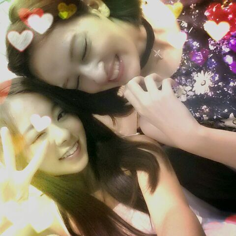
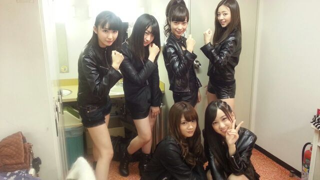

ろってぃちゃんだよ〜
せっちゃーーーん！！！
せっちゃーーーーーん！！！！
お誕生日 おめでとーーーう＼(*^∇^*)／

まひろの だ〜い好きな せっちゃんが 20回目のお誕生日を迎えたのっ！☆ミ
せっちゃんはステキな二十歳。
久しぶりに パパとママとご飯に行って
大事な時間を過ごせたみたいだし
本当良かったよ。
29日 直接会うことができなかったから
まひろは 音声メッセージを送ったよ。
そしたら せっちゃんと
せっちゃんパパ ママからも音声がきて
嬉しかったよ\(*´▽｀*)/
いつも 本当にありがとう。
生まれてきてくれてありがとう。
＿＿＿＿＿＿＿＿＿＿＿＿＿＿＿＿
ぴょん.
昨日はとある収録でした。
それと 今日はBAD "GIRLS"J 乃木坂46 スペシャルナイトにて
「世界で一番孤独なLover」を
披露させて頂きました★
皆で 革ジャンと テカテカの短パン履いてね！
なかなか短いパンツだった...
恥ずかちぃぉ(*ノ▽ノ)
それにしても、今日はいつもより
少し緊張してた私がいました.
楽しかったです！

どぅ？ 似合ってますか？
以上っ ☆ ろってぃ-でしたん。
髪の毛 ぶぅばぁぁあ〜 )))